Lo que sucede dentro de ti.
Un ciclo en constante transformación. Cuatro fases, múltiples procesos y una experiencia que nunca es exactamente igual.
Explora las fases
Un ciclo en constante transformación. Cuatro fases, múltiples procesos y una experiencia que nunca es exactamente igual.
Explora las fases